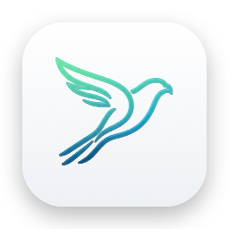

Kestrel
Mac'inin sağlığını menü çubuğundan izle.
Sık sorulanlar
Kestrel'i açtım ama pencere göremiyorum.
Kestrel menü çubuğunda çalışır. Ekranın sağ üstünde, saatin yanındaki kalp ve CPU/MEM göstergesine tıkla.
Bildirimler gelmiyor.
Sistem Ayarları › Bildirimler › Kestrel bölümünden bildirimlere izin ver. Butonların doğrudan görünmesi için stili "Uyarılar" yap.
Disk temizliği yalnızca İndirilenler'i gösteriyor.
Temizlik penceresindeki "Erişim Ver" ile ev klasörünü seç. Böylece büyük dosyalar ve Xcode, npm, Gradle gibi geliştirici artıkları da bulunur. Hiçbir dosya sen onaylamadan silinmez; onayladıkların Çöp Sepeti'ne taşınır.
Neden hangi uygulamanın ne kadar bellek kullandığını göstermiyor?
Mac App Store uygulamaları güvenlik nedeniyle diğer uygulamaların bilgilerini okuyamaz. Bunun için paneldeki Etkinlik Monitörü düğmesini kullanabilirsin. Kurallar ise bir Kısayol çalıştırarak istediğin uygulamaları kapatabilir.
Pil kapasitesi Sistem Ayarları'ndakinden farklı.
Kestrel, tam şarj kapasitesini pilin tasarım kapasitesine oranlar. Apple'ın hesabı farklı olduğu için birkaç puan fark normaldir.
İletişim
Sorun, öneri ya da hata bildirimi için: bccappsupport@gmail.com
Kestrel Support
Monitor your Mac's health from the menu bar.
FAQ
I opened Kestrel but don't see a window.
Kestrel lives in the menu bar. Click the heart and CPU/MEM indicator at the top right of your screen, next to the clock.
I'm not getting notifications.
Allow notifications in System Settings › Notifications › Kestrel. Set the style to "Alerts" to see the action buttons directly.
Disk cleanup only shows my Downloads folder.
Click "Grant Access" in the cleanup window and choose your home folder to also find large files and developer leftovers such as Xcode, npm, and Gradle caches. Nothing is deleted without your confirmation; confirmed items go to the Trash.
Why doesn't it show how much memory each app uses?
For security, Mac App Store apps can't read information about other apps. Use the Activity Monitor button in the panel instead. Rules can run a Shortcut to quit the apps you choose.
Battery capacity differs from System Settings.
Kestrel compares the full charge capacity with the battery's design capacity. Apple uses a different calculation, so a difference of a few points is normal.
Contact
Questions, ideas, or bug reports: bccappsupport@gmail.com